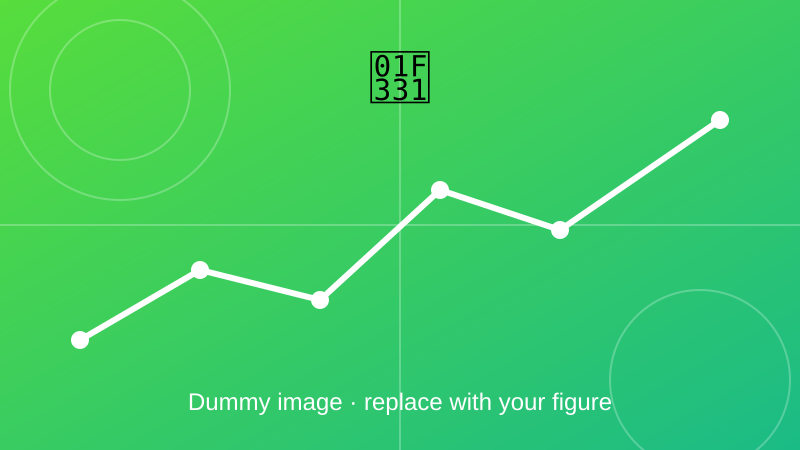

Life Cycle Assessment of Electric Vehicles
A GREET-based assessment of greenhouse gas emissions of electric and conventional vehicles in India.

Overview
A GREET-based life cycle assessment framework was developed to evaluate greenhouse gas emissions of electric and conventional vehicles under Indian operating conditions, for cradle-to-gate (CTG) and well-to-wheel (WTW) boundaries. Vehicle manufacturing, battery production and fuel-cycle analysis support sustainable transport planning and decarbonization strategies.
Objectives
- Compare electric and conventional vehicles on the same basis.
- Include manufacturing, battery production and fuel cycle.
- Find the distance after which an EV becomes the lower-emission option.
Method and key equations
Emissions are split into a one-time part (building the vehicle and battery) and a per-kilometre part (fuel or electricity). Adding them over the vehicle lifetime gives a fair comparison.
Well-to-wheel emissions are the well-to-tank (fuel production) part plus the tank-to-wheel (use) part.
EV use-phase emissions per km from energy use \(c_{\mathrm{EV}}\), grid emission factor \(\mathrm{EF}_{\mathrm{grid}}\) and charging efficiency \(\eta_{\mathrm{ch}}\).
Life-cycle emissions per km: manufacturing and battery emissions spread over the lifetime distance \(L\), plus use-phase emissions.
Break-even distance: after \(L^{*}\) km the EV has emitted less than the conventional vehicle.
Outcome
Add your results here: key findings, figures, and links to the related paper or code.